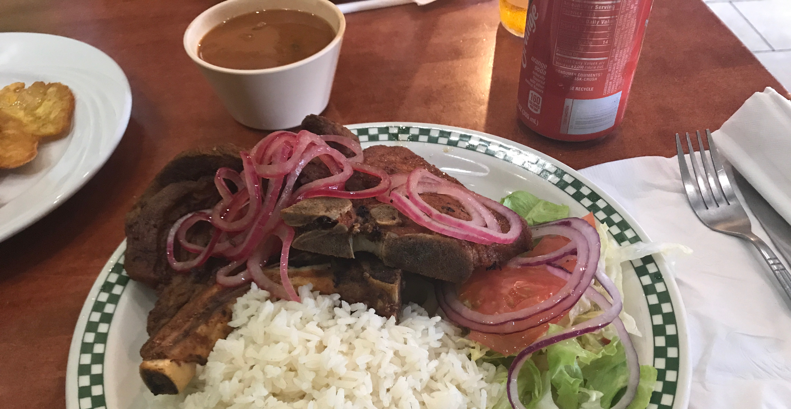
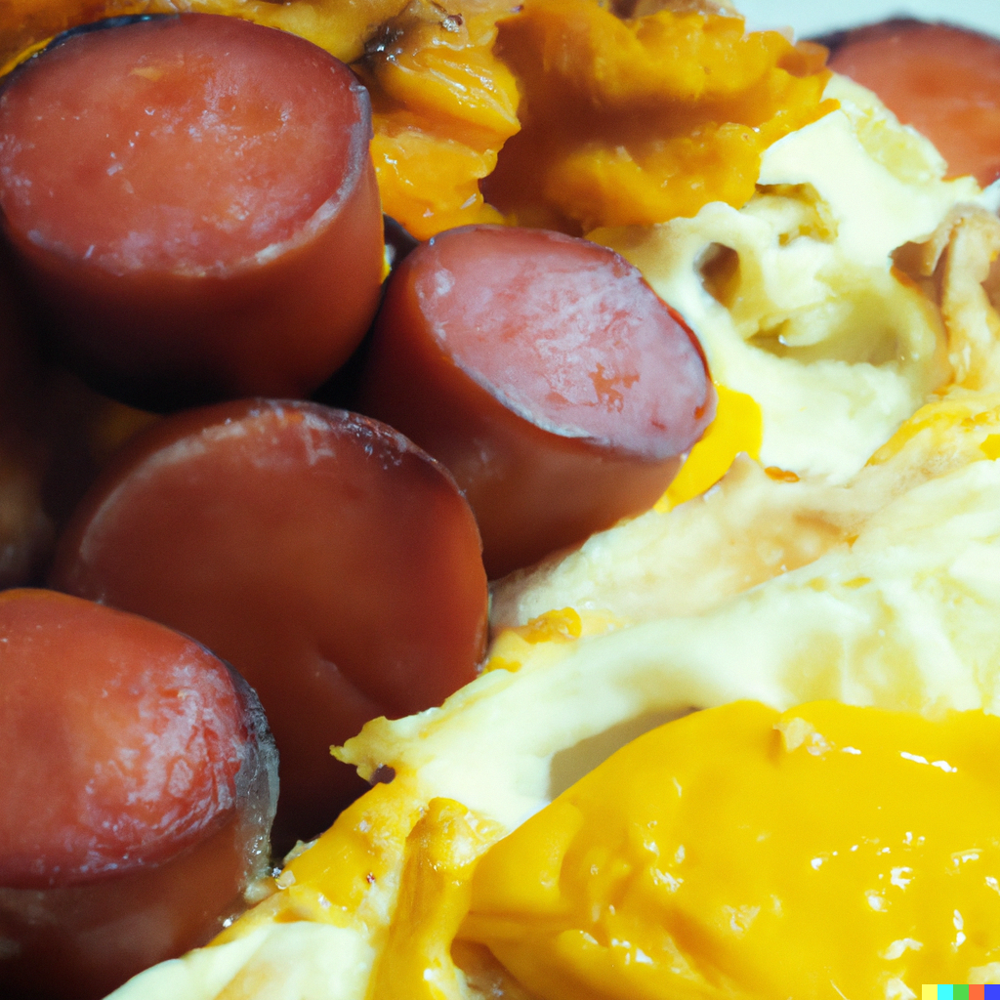
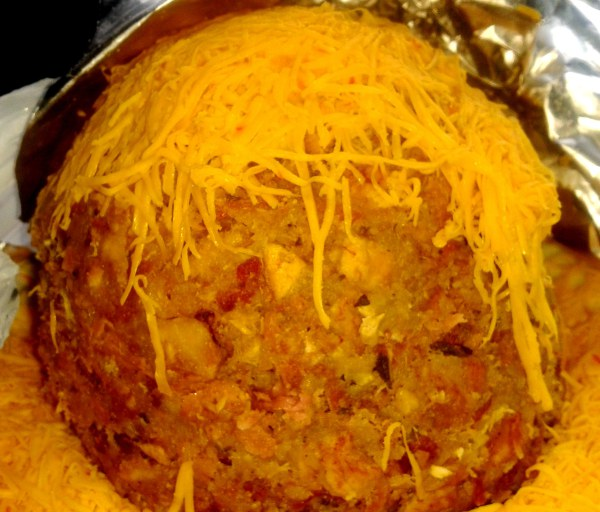
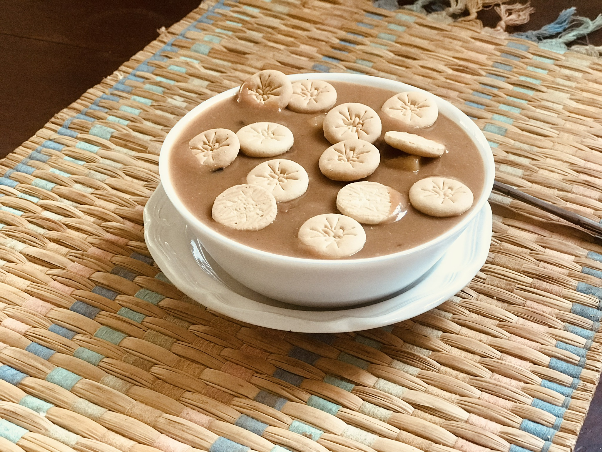
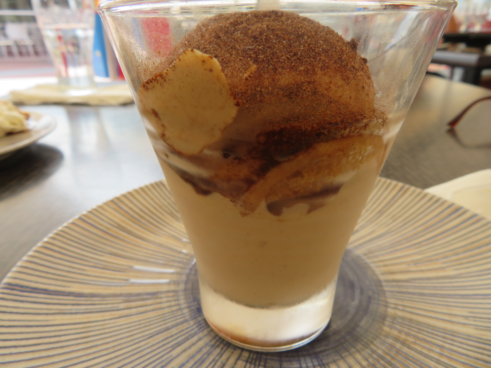
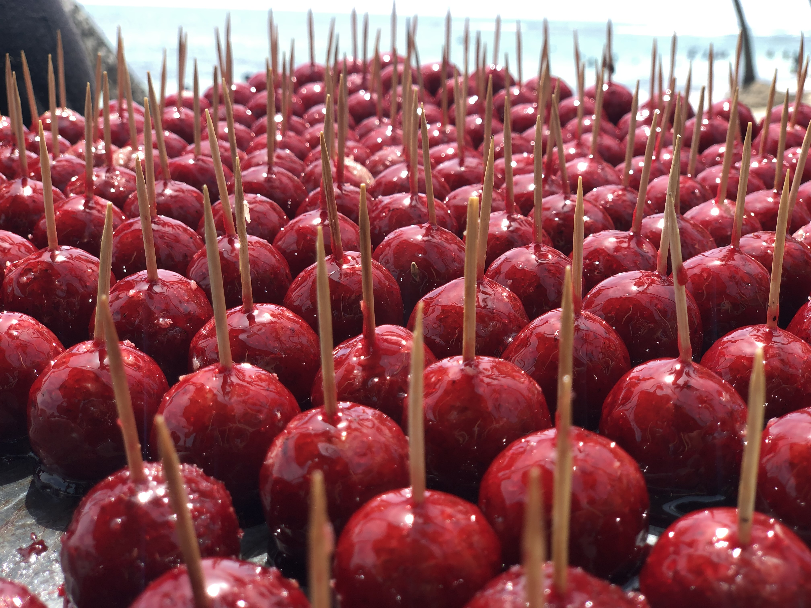

La Bandera Dominicana
Arroz branco, feijão, carne e acompanhamentos formam uma das refeições mais representativas do país. Seu nome significa “a bandeira dominicana” e remete a um prato tradicional do dia a dia.
Uma cozinha de raízes
A culinária dominicana é marcada pelo encontro entre influências indígenas taínas, africanas e espanholas. Arroz, feijão, banana-da-terra, mandioca, carnes e peixes compõem uma cozinha rica em sabores e tradições.
Cada região guarda seus próprios costumes à mesa, presentes nas refeições familiares, nas festas populares e nos pequenos restaurantes onde receitas tradicionais continuam sendo compartilhadas entre gerações.
Clássicos à mesa
Receitas presentes no cotidiano dominicano, com ingredientes que revelam a história e a diversidade da culinária local.

Arroz branco, feijão, carne e acompanhamentos formam uma das refeições mais representativas do país. Seu nome significa “a bandeira dominicana” e remete a um prato tradicional do dia a dia.

Preparado com banana-da-terra verde cozida e amassada, costuma ser servido no café da manhã com cebola refogada, ovos, queijo frito e salame dominicano.
Um ensopado encorpado feito com carnes, tubérculos, legumes e temperos. É muito associado a encontros familiares e ocasiões especiais.

Preparado com banana-da-terra frita e amassada com alho e outros ingredientes, pode ser servido com carne, frutos do mar ou caldo. Possui variações e influências culinárias compartilhadas pelo Caribe.
Doces e sabores tropicais
Frutas, leite, açúcar e especiarias dão origem a doces que fazem parte das celebrações e dos costumes dominicanos.

Uma sobremesa tradicional preparada com feijão, leite, açúcar, batata-doce, especiarias e, em algumas versões, biscoitos. É especialmente consumida durante a Semana Santa.

Preparado com leite e açúcar, aparece em diferentes versões e pode ser combinado com frutas ou utilizado como recheio de doces.

Doce feito com coco ralado, açúcar e especiarias, que pode apresentar uma textura cremosa ou mais firme, dependendo da receita.
De norte a sul
O litoral, as montanhas e as áreas rurais influenciam os ingredientes e os costumes culinários de diferentes regiões dominicanas.
Litoral
Peixes frescos, camarões e outros frutos do mar aparecem em pratos preparados com alho, limão, coco e temperos locais.
Interior
Arroz, feijão, carnes, tubérculos e banana-da-terra formam refeições que refletem a importância da agricultura e da cozinha caseira.
Samaná
A região é conhecida por preparações que utilizam leite de coco, peixes e frutos do mar, combinando ingredientes tropicais em receitas características do litoral.
Cibao
No vale do Cibao, produtos agrícolas, carnes e pratos à base de banana-da-terra fazem parte da identidade gastronômica regional.

Sabores e encontros
Sabores e encontros na República DominicanaViva a gastronomia
Ideias para conhecer ingredientes, pessoas e histórias por trás da cozinha dominicana.
Explore bancas de frutas tropicais, temperos, tubérculos e produtos locais para conhecer os ingredientes que fazem parte da culinária dominicana.
Peça uma bandera dominicana em um restaurante local e descubra os sabores que fazem parte do cotidiano do país.
Experimente sobremesas como habichuelas con dulce e dulce de coco, que revelam diferentes aspectos das tradições culinárias dominicanas.
Conheça restaurantes que preparam peixes e frutos do mar com ingredientes tropicais, especialmente nas regiões costeiras.
Continue explorando